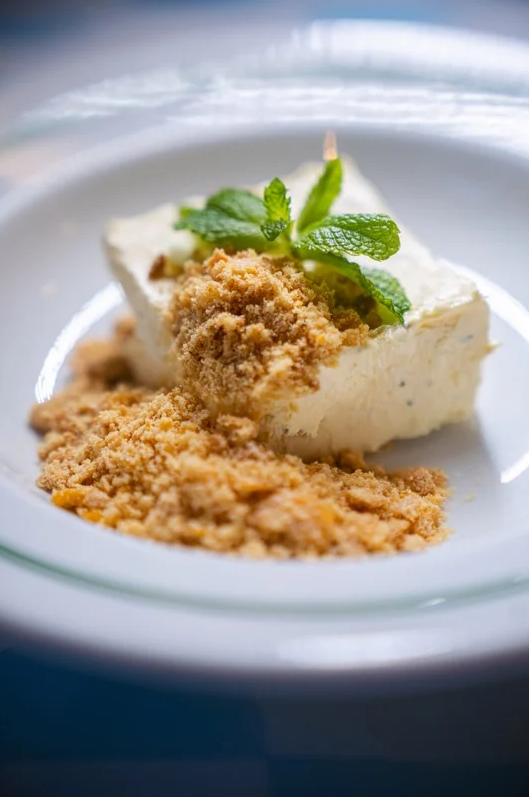
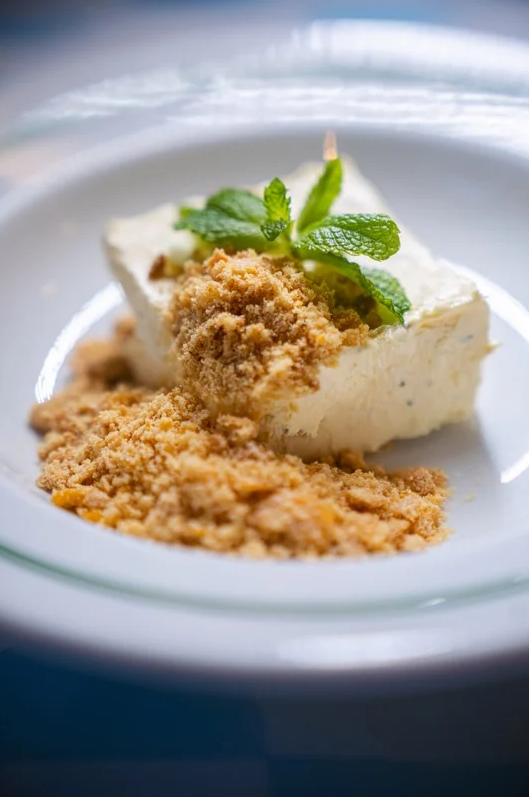

Antonio Felipe
VideoMaker & Mobile


SOU FORMADO EM MARKETING DIGITAL E ATUO COMO VIDEOMAKER MOBILE E EDITOR DE VÍDEOS. TENHO EXPERIÊNCIA COM COBERTURA DE EVENTOS E ENTREGAS EM TEMPO REAL TAMBÉM, JÁ ATUEI DE FORMA INDEPENDENTE PRODUZINDO CONTEÚDOS COMPLETOS PARA DIVERSOS RESTAURANTES E MARCAS NO RIO GASTRONOMIA. UTILIZO ADOBE PREMIERE, CAPCUT E DAVINCI RESOLVE, SEMPRE COM FOCO E AGILIDADE, QUALIDADE E CONEXÃO COM O PÚBLICO.


 
